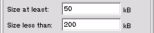
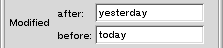

| Overview |
The Name Panel
|
The File Panel
|
The Date Panel
|
Find button, FastTraX will search
within the specified location, for files which match all
the criteria you have specified. Edit boxes that are empty are ignored.Name PanelName Panel.
Name panel labeled Find in:/boot/home - your home directory
/boot/home/Desktop - your Desktop
/boot/beos - the BeOS system folder
/boot/optional - the optional items folder (if installed)
other..." option. Selecting this
will bring up an Open window to allow you to select any other folder
you wish.
Named: is where you can type in the name
of the file you are looking for.globs, thus to seach
for all gif images you could put *.gif into this box.
To search for all files containing "be" in their name, try *be*
All names used are case-insensitive, thus *.txt is the same
as *.TXT or *.TxT (etc)
You can leave this field blank to find all matching files, regardless of name.
Include Sub-Directories
Leaved this box checked to have the search descend into subdirectories of the
selected folder.
Uncheck it to search only at one level.
The File Panel
The File panel is where you can place restrictions on the size, type
and contents of a file.
To access the File panel, click the File button at the top
of the FastTraX window.
The fields on this panel are:
Containing Text where you can search for a file based on its
contents.
Size at least , Size less than where you can place
restrictions on the size of the files you wish to find.
Kind, allowing you to search for a Folder, Plain File or Symbolic
Link.
Containing Text
In this Edit Box, you can type in some text that you wish to search for.
This must be plain text - the seach does not use globs or regular expressions.
Putting text in this field will also cause the search to be restricted to plain
files only, as only these can contain text. (NB: The "Kind"
popup will NOT change to indicate this, but so that the search will work correctly,
the restriction will be added when you commence the search)
Size...
There are two Edit Boxes for entering a file size in. You can use either, or both.
Size at least: - the minimum size of the file to find.
Size less than: - the maximum size of the file to find.
As you can see, by placing the lower bound on the size in the top box, and the upper
bound in the bottom box, you can specify that the files found are to fall within a
given range of sizes.

eg The screenshot to the left shows how to search for a file that is
between 50kB and 200kB in size.
Kind
The Kind PopUp allows you to specify the kind of filesystem entity you
are looking for.
This must be one of File , Folder , Link or
"Any"
You cannot search for Filetypes in this version of FastTraX.
The Date Panel
The Date Panel is where you can add criteria about the modification
or creation date of files.
There are four edit boxes on this panel. All four use parsedate which is
a function in the BeOS to convert a string into a date. parsedate
understands a large number of formats. Some examples are:
today which will give you today at 0:00
today 3:15am which will give you today at 3:15
last saturday 15:34:11 (3:34 PM (and 11 seconds) on the preceding Saturday)
this monday (the coming monday, 0:00)
Note though, that parsedate has some problems with commas in the
strings, so you are better leaving them out. If FastTraX cannot understand the
date you enter, it will being up an alert to inform you.
As with the Size section of the File
Panel, there are two edit boxes for the each for Modified and
Created. This allows you to specify a range of times to search, thus
if you know that you changed the file yesterday, you can enter

because "yesterday" will default to 0:00 yesterday, and
"today" will default to 0:00 today.
See Also
Documentation Copyright (C) 1999, Tim Vernum.
Images Copyright (C) 1999, with the exception of the User and Developer Icons,
Copyright Be Inc.
All rights reserved.
Tim Vernum
27th June 1999